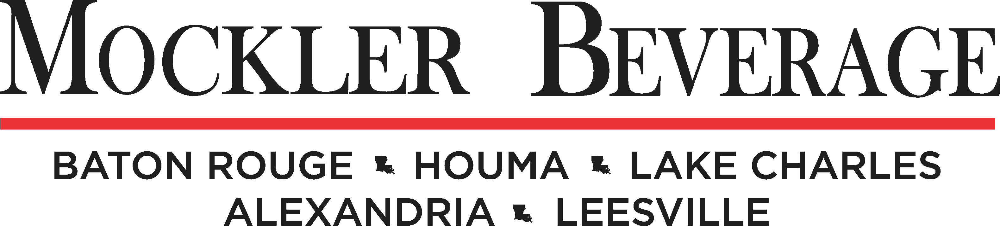

Interactive Coodinator and Designer
Stun Strategic Creative · May 2024 - Present · Baton Rouge, LA
- Work within a cross-fucntional team to create custom sites.
- Manage and maintain all client websites hosted across multiple third-party platforms.
- Go in to the backend of sites to perform maintenance and edits.
- Communicate with clients about the development process.
Graphic Designer
MESH · February 2024 - May 2024 · Baton Rouge, LA
- Created animated social posts by utilizing Illustrator, Photoshop and Creatopy for client and MESH social channels.
- Assisted with production of digital ad campaigns, print ads, video content, and the creation graphic elements.
- Crafted intuitive templates for client production work that can be accessed and edited amongst a cross-functinal creative and digital teams.
- Collaborated with senior graphic designers to produce social content that aligned with new client branding goals and maintained brand consistency.
- Created wireframes and high-fidelity mockups for website rebrands or custom builds.

Graphic Designer
Mockler Beverage Company · April 2023 - February 2024 · Baton Rouge, LA
- Created personalized logos for musicians and local events.
- Managed company’s social media presence and developed content aligning with marketing goals.
- Collaborated within a team to create and present redesigns of the Mockler Beverage Company website.
- Organized media for sponsored events, product promotions, and point of sale advertising.